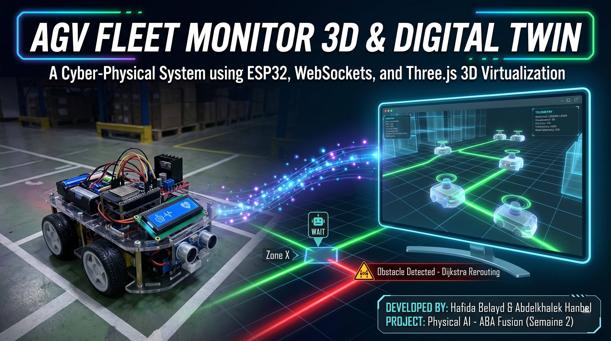
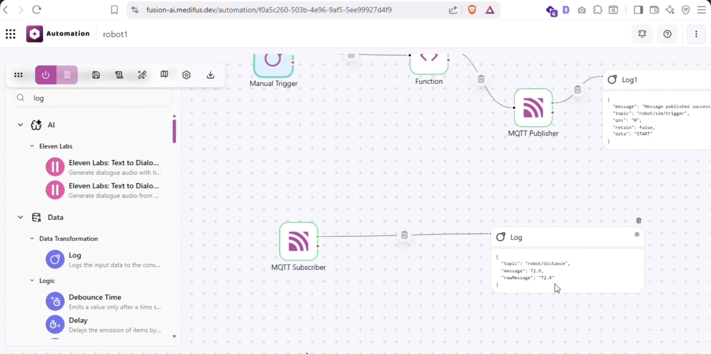

AGV Fleet Monitor 3D & Digital Twin
A Cyber-Physical System Integrating Edge Microcontrollers, Real-Time WebSockets, and Three.js 3D Virtualization.
A Cyber-Physical System Integrating Edge Microcontrollers, Real-Time WebSockets, and Three.js 3D Virtualization.

Modern warehouse automation relies extensively on Automated Guided Vehicles (AGVs) to coordinate logistics. Managing a physical fleet of AGVs presents challenges, particularly around system visibility, network latency, and collision prevention. This project resolves these issues by implementing a cyber-physical digital twin architecture.
By combining an embedded ESP32 microcontroller, a Python simulation routing broker, and an interactive React Three Fiber 3D client, we provide operators with real-time telemetry streaming, visual route coordinates, and manual trajectory overrides. Security is enforced via a two-layer safety mechanism combining automated hardware interrupts and cloud coordinated software locks.
The system uses a four-layered Cyber-Physical Architecture designed to ensure decoupling, reliability, and real-time visualization. Data flows from sensors up to the browser visualizer and down from the user HUD as commands.
en-US-JennyNeural.To ensure maximum resilience and adaptability, the communication bridge has been upgraded to support a Dual-Broker Architecture (Optional). Depending on the deployment environment, operators can easily toggle between two modes:
The physical vehicle is governed by an ESP32 edge microcontroller executing a non-blocking scheduling loop. The firmware maintains strict timing for telemetry updates, LCD refreshes, ultrasonic distance scans, and MPU6050 gyroscope tracking to maximize responsiveness.
Unlike legacy looping structures that rely on delay(), our firmware uses millis()
timer comparison thresholds. The telemetry system has been completely modernized to transmit data as structured
JSON payloads (e.g., {"dist":12.5, "yaw":45.2, "status":"ACTIVE"}), greatly improving backend
parsing reliability.
We integrated an MPU6050 6-Axis Gyroscope to track the vehicle's precise Z-axis (Yaw) rotation in real-time. This provides highly accurate heading data via MQTT, which is used to execute perfect one-shot turns without relying on blind time delays.
The Python server (running headless_simulator.py) manages fleet physics and navigation logic. It
handles path routing and coordinates traffic intersections to prevent collisions.
The warehouse is defined as a graph containing node coordinates (Zones A, B, C, D, Charging Zone R) and lanes. When a new target is dispatched, the backend computes the shortest path using Dijkstra's algorithm and streams coordinates step-by-step.
Zone X is a central intersection prone to collisions. Access is governed by a software **Mutex Lock**
(ZoneXTrafficController). If AGV-01 occupies the zone, a lock is acquired, and any secondary AGVs
requesting access are placed in a WAIT state. Once AGV-01 exits, the lock is released, and the next
vehicle proceeds.
When a vehicle (physical or simulated) encounters an obstacle, it reports the incident to the Python backend server. The server immediately closes this lane segment programmatically, triggering a real-time recalculation of the path using Dijkstra's algorithm. This closes the edge-to-server control loop, rerouting the vehicle safely around the obstacle.
The React frontend connects via WebSockets to the Python backend to synchronize the virtual and physical states. It features an interactive **Glassmorphism HUD** panel built with CSS backdrop-filters, custom Outfit/Space Grotesk typography, and neon glows.
Inside the Three.js 3D canvas (React Three Fiber), the visual assets have been enhanced to match the physical states:
en-US-JennyNeural neural voice), encoded as Base64 MP3, and streamed
through the WebSocket for browser playback. This replaces the unreliable browser-level
speechSynthesis API, delivering consistent, high-quality and natural English speech for all
fleet events.
When any fleet event occurs (E-Stop, dispatch, obstacle, Zone X entry, etc.), the Python backend calls the
announce(text) coroutine. This function invokes generate_english_speech(text), which
uses the edge_tts.Communicate API to synthesize an MP3 file using the highly interactive
en-US-JennyNeural Microsoft voice. The audio bytes are Base64-encoded and broadcast to all
connected WebSocket clients as a special {"type": "speech", "audio": "..."} payload. The React
frontend detects this payload type in its ws.onmessage handler and plays it using
new Audio("data:audio/mp3;base64," + payload.audio).play().
The 3D Dashboard features a dedicated "Auto Mission" system capable of autonomous sequence execution. We implemented a "Square Runner" sequence that drives the vehicle in a perfect square by looping four times through a configurable forward driving period and a rotation period. The progress of these maneuvers is dynamically visualized in the HUD via animated progress bars and countdown timers synchronized with the physical robot's movements.
Python Orchestration Logic:
def execute_square():
global is_square_running
is_square_running = True
for side in range(1, 5):
if not is_square_running: break
# 1. Forward movement (using BACKWARD due to inverted edge logic)
send_command("BACKWARD")
time.sleep(time_forward)
if not is_square_running: break
# 2. Right 90° Turn (MPU6050 precise rotation)
send_command("RIGHT")
time.sleep(time_turn)
# Sequence complete
send_command("STOP")
is_square_running = FalseThe diagram below traces the communication lifecycle when an operator triggers a route dispatch, highlighting the edge-level safety interrupts.
{"command":"dispatch","target":"A"} via WebSocket to Python backend.
"FORWARD") to the HiveMQ
MQTT broker on topic "robot/control".
emergency_stop: true to React client.
en-US-JennyNeural Edge
TTS voice, encodes as Base64, and broadcasts as {"type":"speech","audio":"..."}
payload. Browser plays the audio automatically via Web Audio API.
The following snapshots demonstrate the various operational states of the 3D Digital Twin and Fleet Monitor interface during real-time testing.

Analysis: This view highlights the "Auto Mission: Square Runner" execution pane. The interface shows a successfully completed autonomous square pattern with dynamic countdown timers synchronized for both Forward movement and 90° Gyroscope turns. The system correctly tracks time intervals mapped to real-world physics.

Analysis: The main Fleet Monitor layout displaying active telemetry. The sidebar tracks Live Battery (61%), Distance Sensor values, and precise Gyro Yaw angles. The 3D view shows the vehicle positioned at Zone C with realistic dynamic lighting and shadows.

Analysis: Shows the system's reaction to an obstacle. The route between Zone C and Zone X is dynamically marked in red (blocked), and the system highlights the active hazard using visual alerts on the 3D grid, ready to recalculate an alternate path using Dijkstra's algorithm.

Analysis: First-Person View (FPV) Camera mode activated. The camera tightly follows the AGV from behind, showing the rotating ultrasonic scanner cone and emissive LED lights from an operator's perspective on the ground.
To complete the Cyber-Physical Architecture, the system is fully integrated with the ABA Fusion Cloud Automation Platform. The node-based visual workflow (shown below) bridges the gap between manual remote operations and automated cloud logging.

Workflow Analysis: This ABA Fusion automation pipeline serves a dual purpose:
1. Top Flow (Remote Dispatching): Features a "Manual Trigger" connected to a "Function" node and an "MQTT Publisher". When triggered, it securely publishes a JSON payload with the data "START" to the robot/sim/trigger topic. This acts as a cloud-based remote control mechanism to dispatch the AGV from anywhere.
2. Bottom Flow (Telemetry Monitoring): Features an "MQTT Subscriber" listening to the robot/distance topic. It captures real-time distance sensor readings (e.g., 72.9 cm) sent by the ESP32. The subsequent "Log" node records these values in the cloud, forming the foundation for historical data analysis and predictive maintenance alerts.
By integrating edge hardware safety overrides with an interactive 3D virtual twin and a professional English
Neural TTS voice system, this project delivers a highly secure, traceable, and accessible AGV fleet coordination
platform. The low-latency MQTT/WebSocket synchronization (upgraded to structured JSON payloads), real-time
haptic-like visual warnings, and spoken English announcements powered by the en-US-JennyNeural
Microsoft Edge TTS voice ensure safe and professional industrial automation.